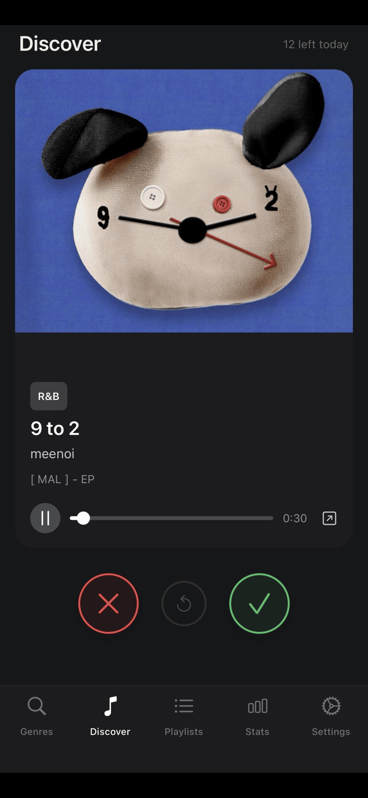
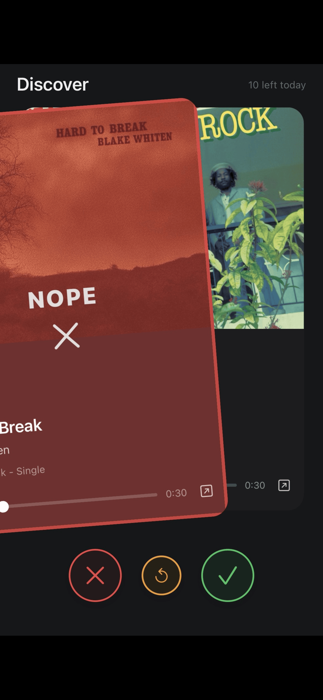
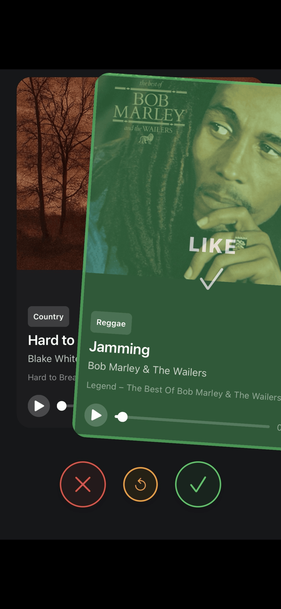
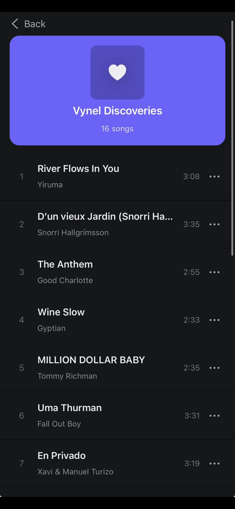
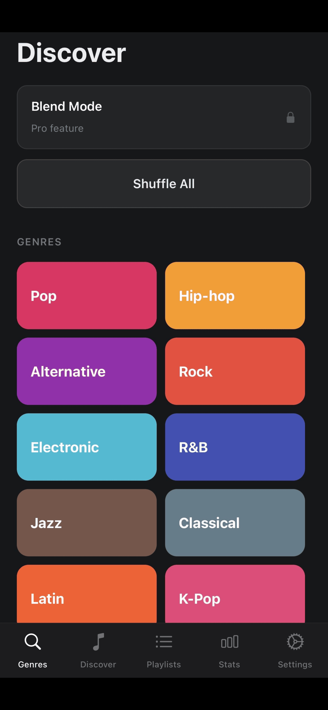
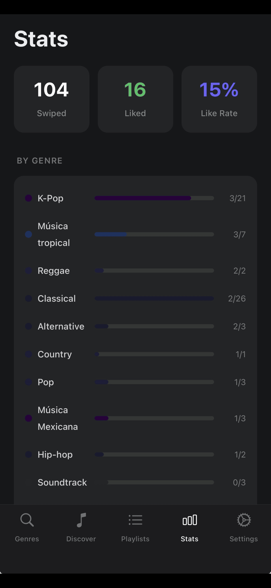
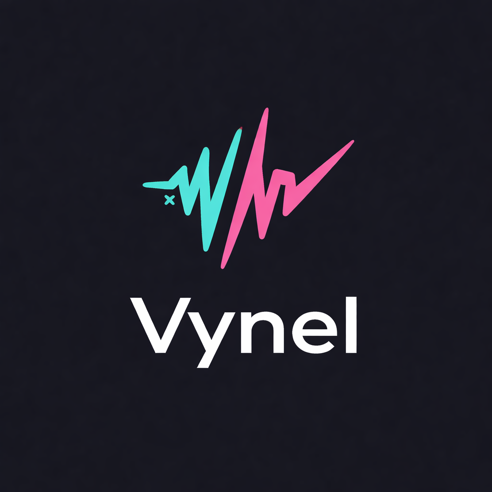

tinder-style music discovery app that builds a personalized queue from iTunes, Apple Music charts, and your liked artists
Vynel is a mobile music discovery app built around a simple idea: swipe right to like a track, swipe left to skip it. The app builds a personalized 30-card queue by blending iTunes Search results, Apple Music chart data, and tracks from artists the user has already liked, weighting each source dynamically based on listening history. Liked songs feed into listening stats and playlist management screens. It targets casual music fans who want a low-friction way to discover tracks across any genre, without the algorithm opacity of major streaming platforms.
The frontend is Expo/React Native in TypeScript, using react-native-reanimated for GPU-accelerated card animations running on the UI thread, and react-native-gesture-handler for low-level swipe recognition. The backend is Fastify with Drizzle ORM on PostgreSQL, deployed on Railway. All music operations route through a service adapter interface with three concrete implementations: a guest adapter backed by AsyncStorage, a Vynel account adapter hitting the backend, and an Apple Music adapter that dual-writes to both Apple's library and the Vynel backend.
The hardest problem was preventing concurrent audio players across an async boundary. The swipe card stack can trigger autoPlay() on multiple cards in rapid succession: the user swipes quickly, a song fetch resolves and replaces the deck, or the component mounts twice under React strict mode. Each autoPlay() call has a single async step (ensureAudioMode, a singleton promise that configures the iOS audio session). Without guards, two concurrent calls could both pass the "is there an active sound?" check, both await the same promise, and both create players, resulting in two simultaneous audio streams.
The solution uses three module-level variables as a distributed lock that works across the async boundary: a monotonically incrementing sequence counter, a song ID claim, and the active player reference. Each autoPlay() call snapshots both the sequence number and its song ID before the await, then checks both again after. A second check runs after player creation but before play(), catching a subtler race where two calls both clear the active player, both await, but the first one creates and starts a player before the second one resumes. The ensureAudioMode singleton closes the final concurrency window by ensuring only one setAudioModeAsync call is ever in flight.
A companion bug caused double fetches on mount: seededGenres was in the fetch effect's dependency array, so one fetch fired on mount and a second when AsyncStorage hydrated. Moving seededGenres into a ref eliminated the re-trigger without resorting to useCallback gymnastics.






